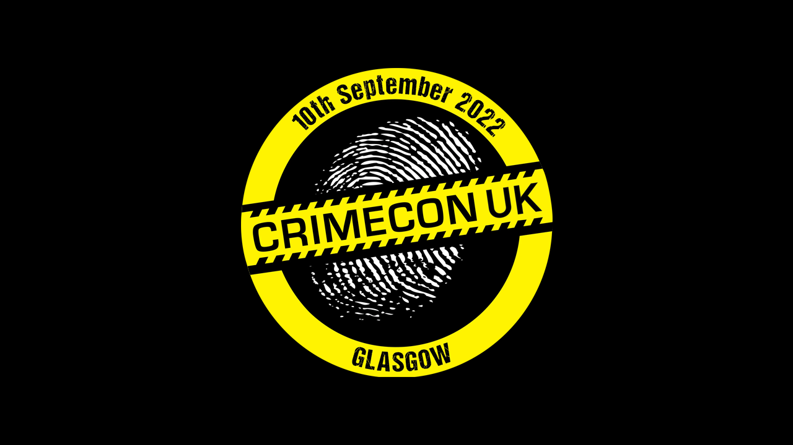

CrimeCon UK - Glasgow - 2022
This article was originally published 17th September 2022 on Linkedin
CrimeCon is the World's No.1 True Crime Event and CrimeCon UK was being held at the Glasgow Hilton in Glasgow for the first time on the 10th of September 2022, and attended as part of the event's Podcast Row Experience for attendees representing Scottish Murders, which is a fortnightly podcast dedicated to solved and unsolved murders carried out in Scotland or murders of Scottish people.
CrimeCon started with a tribute to Her Majesty Queen Elizabeth II who had sadly passed away a couple of days before the event, with a story from Nazir Afzal, who spoke about a gift he participated in for the Queen for her Golden Jubilee where he prosecuted for a court case in her presence which he said was a wonderful experience, afterwards a minute's silence was held in her honour.
Welcome to CrimeCon
Nancy Baughen the event director for CrimeCon UK and Sam Rowden, Vice President of Content and Production for AMC Networks International, including true crime channel CBS Reality who partnered with CrimeCon spoke about the fact that true crime has captured people's imaginations and in response to this CBS Reality has produced not only their own true crime content but they also show the best true crime content from around the world.
A Prison Governor - In her own words. Vanessa Frake & moderator Sam Rowden, brought to you by CBS Reality
Vanessa Frake was at CrimeCon to discuss her role and her book “The Governor”. She was the former head of security of Wormwood Scrubs prison in London known as “The Governor” and even received an MBE for their role in the prison service. They were asked by Sam Rowden if a career in the prison service was the career they wanted? Vanessa admitted their first choice was to attend agricultural college and milk cows for a living, but the career prospects there weren't what they were after. Vanessa went to a trip to London and saw a poster saying “You too can make a difference” about joining the prison service and decided to apply, they also applied to the Metropolitan Police, and even got accepted to this too as they decided to follow the path to working in the prison service, but decided to stick to that route.
Vanessa was then asked what it was really like in the prison service? She described it as being a village within a wall and that everything that happens outside is reflected inside, so if there is a lot of violence outside then this can be reflected inside. The job of a person in the prison service starts from the moment someone is convicted, the police do all the hard work but this person may be in for two years or twenty years, but most importantly these are just people, once their warrant has expired they have to be put out the gate, but before this they try as hard as they can to rehabilitate the prisoners.
Sam then asked Vanessa what they think should be done with our prison services? She explained there are two main things, one is the fact politics is involved and unfortunately changes in the prison services isn't a vote winner, politicians will be voted for if they are hard on crime and the other is that half of society thinks prisons are too hard and the other half think prison is too soft. There are over 76,000 prisoners and we lock up the most people in prison in Europe, many of these people could be dealt with outside of the prison service. One person was put in prison for six weeks for stealing a British Rail sandwich, with Vanessa going on to say what kind of rehabilitation can happen in that period for a person like that, with cases like that it is society that needs to change.
Vanessa was then asked, did the “man's world” of prison services have its own challenges as a women? She stated that women were paid the same as their male colleagues, but there were limitations such as not being allowed to do the riot training, having to wear skirts and were given a smaller baton than the men, they also felt they had to work twice as hard as the men, she said that men were given a decent uniform and women were given a handbag. She then went on to say that women prisoners were harder to deal with than the men, they could say you can't do that to the men. She also mentioned that women, by their nature were more emotional, they also witnessed fights over a Christmas pudding on Christmas Day. It was the mid-eighties when men could work in women's jails and women could work in men's jails, men on the whole were much more respectful to female staff but the women weren't - they'd be “just no”.
Vanessa was then asked about her encounters with notorious criminals such as Rose West and Myra Hindley and were they as they expected? When Vanessa met Myra Hindley, they didn't recognise them, they looked non-descript with a brown cardigan and mousy hair with no idea who she was, but one of the officers she was with told them who they were. Vanessa has expected Myra Hindley to still be the blonde with the piercing eyes, but she seemed the same as any other prisoner. Rose West was known as Aunty Rose, and was always knitting but no-one seemed to know what she was knitting, she would seem to just go on and on. Vanessa's job was to make sure that Rose West was kept safe, get her out and get her cleaning and she was only allowed out with another prisoner, a Jamaican women who had turned Queen's evidence about a Jamaican gang, so these two were go out together and this went on the entire time they were at Holloway Prison in London. This other woman saw the news and it mentioned Rose West and she said that Rose West deserves everything she's got coming to her, not having any clue about who she had been with for the past six weeks.
Sam asked Vanessa if a book was always in her plans, with Vanessa replying “no”, before going on to say that it came about by accident, they were talking to someone who worked at Wormwood Scrubs prison who was writing a book and wanted some help, the two of them and their ghost-writer spoke together and mentioned that Vanessa should write her story. They wanted to say they could write a book, they'd also flew a spitfire for their sixtieth birthday and so decided to put together the book. Writing the book brought back a lot of things they had not thought about, they had seen a lot of things on a daily basis that a lot of people don't. They had to learn to deal with death, they felt they were actually immune to it and that any feelings were a fleeting thing and that they had to be put away.
Vanessa then said that she struggled when they retired and wondered what was her place in life, what were they going to do and how were they going to fill their days. She mentioned her experiences had taken a toll on her mental health and learned from writing the book that it is okay to not be okay. When there was a suicide there wasn't much time to sit down, you had to crack on, there would be prisoners you had to feed lunch to, you had to put anything you felt in a box and deal with it another time, and there would be a time in the future where it would have to come out at some point. She was happy part of the programme “Released to Kill” with Donal Macintyre for CBS Reality. She also mentioned there were times where they don't get it right in the prison service and there are consequences to this with one in five prisoners reoffending after release.
Vanessa was then asked what the process was for releasing prisoners? She mentioned there is a big change over time, a prisoner gets a life sentence and unless it is a whole life sentence, it will be twenty years, they can't apply for parole but they do have to go through various psychological evaluations and their behaviour in prison is constantly written about. She mentioned that when someone who has committed murder would hopefully go though Category A, B, C and then D - which is an open prison. She mentioned a time when someone absconded and they were put back in prison for a couple of years. When prisoners go out into the world, things have changed, money has changed, mobile phones have been invented and many can't cope. One person manipulated people in the system including the parole board and others, along with many missed opportunities where this person was deemed suitable for release. However there are many procedures to prevent this, they don't just walk out of the gate, but if they are deemed no longer to be a risk to the public - then they are released, although this is on licence so if they do commit any crime, even something like shop lifting they are then sent back to prison.
Vanessa was finally asked if crime dramas are close to reality? Shem mentioned if they had some of the days they see in these kind of those they wouldn't have lasted twenty years, the most recent one they saw “Time” about the prison service was close to reality along with ”Within these Walls”, but mentioned that people are better off watching true-crime programmes, like those on CBS Reality.
Vanessa mentioned that there are people they would never want to release, but at the end of the day, it is the parole board who decides who gets released, they once heard about a category A prisoner who was released, but if the parole board says they have to be released, they have to be released.
A Life of Crime
Two crime journalists, Sunday Times crime reporter David Collins and journalist and broadcaster Isla Traquair spoke about their experiences. They hear from lots of people in the criminal justice system when reporting, they are the mouthpiece to tell the public what is happening, but had very different career paths. Isla started in journalism at the age of 16 and covered crime stories for newspapers then moved into television. Isla also did national news, and covered the Ipswich Prostitute Killers, they did this as many people don't cover stores about sex workers. She also did things in the United States, including with people like Oprah Winfrey. They had a lot of behind the scenes stuff they wanted to share so created a podcast which went to number one in the iTunes charts, they've also written a book, have a drama series coming out and they still have a lot of stories to tell.
David Collins has always been a newspaper reporter, they started working for the Daily Mirror at 22 and in 2025 they went to the Sunday Times where they specialised in covering long-term and complex investigations and were hired to do Crime and Justice Investigations. They interviewed Levi Bellfield, who hadn't been proven at that time to have killed Milly Dowler along with interviewing people related to that case and during their second interview with Levi Bellfield he admitted something that put him at her crime scene which helped allow him to be charged with her murder. David then went to Kenya about the murder and cover-up of a crime there as a lot of people there weren't happy with the investigation there.
Isla was asked what attracted them when they were young to report crime cases? She replied stating that they didn't want to report on this initially, the “death knock” as it is known, was their least favourite job, which is to speak to someone who has lost a member of their family. It was quite terrifying for them to do that, they even felt sick the first time but were relieved when the person didn't answer the door. When going to speak to a family member they knew they were the last person they wanted to speak to, there was one time they spoke to someone who tried to punch them, which was a case they covered in their first podcast series, but they had just been questioned by the police so understood their reaction somewhat. Isla was nicknamed the “Death Knock Queen” but they do feel they are a compassionate person, everyone gets affected by a crim, even the journalists covering them, they do sometimes get into dark situations but are good in a crisis. Some families don't want to get journalists involved and don't want the case to be public but many want it to be covered and make a point about it. Journalists can be an ally to keep a case in the public eye. Isla wasn't happy with the way that women who were sex workers were treated and portrayed in the media. There was a case where a family convinced them on one case who they thought the culprit was but when they investigated they found this was not correct.
David got into covering crime when he was a trainee in Belfast, there were fascinated at the time as the IRA were decommissioning which was being replaced at the same time in a rise in the controlling of drugs, it was quite a complex situation, David says that Ireland is quite complex and the people in Ireland are fascinated by crime. During the 50s and 60s the Daily Express had bought a million pound town house to entertain their contacts as it was such a big thing then. If you report crime properly there can be political implications and many other aspects. The way crime is changing over the Covid period was interesting, often it is now about turf warfare in many places anymore, for example in Liverpool feuds are about someone who as one out with the wrong girl or bumped into someone instead. Crim has so many aspects to it, you're telling people stories.
They were asked if they were ever scared for their lives? David mentioned that being English in Ireland is a risk and has received death threats, after their Milly Dowler work, where they tried to find the Red Daewoo car, the car she was thought to have been taken in which the police would never track this down, even though they tried for months and months and had information fed from the criminal underworld in London and after following lots of leads got hold of a phone that had lots of text messages on it, that mentioned the disposing of a the car and that Levi Bellfield has used and they had got rid of it, but this person had been arrested and weren't charged. This person was a “low-ranking” criminal, those kinds of criminals had less to lose, but they received a voice mail from them saying “they're going to bury them next to Milly's grave” however no one was found who did this and nothing was proven, they even knew of someone who had go to Brazil to hide from some of the repercussions of covering organised crime. Isla mentioned that someone they received threats from had taken off their stiletto and stabbed someone in the eye with it, another person said their ex-wife was trying to kill them, that the Royal Family were involved and Donald Dewar had been murdered, this person had also been in Carstairs psychiatric hospital, they later heard they had tried to kill their ex-wife by burning down their house.
Isla and David were also asked if there were any cased that had affected them personally? Isla had a case that affected them, but they mentioned they do compartmentalise, for one they covered for their podcast - The Storyteller: Murder Most Foul, was a case they revisited that was twenty years old, it was a solved case but it was unresolved, they had returned to see the mother of the victim and help them find peace, which was really worthwhile. There was also another case where they went to find the body of a women who was murdered in Peru but they just need the right equipment and they can probably find it. David mentioned a case when he moved to Manchester, which was around the time of the Manchester Arena Attack at the Ariana Grande concert there. David had reported on this and had got close to the families, when you know so much of the detail the family becomes part of their life. One detail that gets to them, from all the things that happened when the terrorist when into the arena and set off the bomb, there was an aunt, their sister and the sister's younger daughter, and at around 11 or 12 at the moment of the explosion the aunt had turned into the explosion to shield her niece, the sister and her daughter survived but the aunt died and to think of the moment of utter bravery to make sure the others survives is what stuck with him. Isla mentioned that it is those moments of bravery when you see the lightest of lights, it is for people to understand and have empathy for others. Isla has also had some good moments, they had their first front page next to a photograph of Pamela Anderson, also when they were at school and did a careers questionnaire it had shown there was a good chance she would become a journalist. David spoke about the recent arrest for the 1996 Manchester bombings, that an MP had said there would never be anyone caught, it was unsolved, although there was no actual death the explosion had levelled the city centre. This case has been something they have been working on for a long time and the arrest came as a complete surprise, but whether this will come to a charge remains to be seen, especially after so much time has passed. The only good thing that came form that day, from speaking to politicians was it did allow for the complete redesign of Manchester city centre, but despite this, it was still an appalling offence that many are still unhappy about to this day in Manchester.
Unspeakable Scotland Live
Broadcaster and writer Janice Forsyth was joined by award-winning podcast producer Cameron Angus MacKay as they talk about their podcast - Unspeakable Scotland. Janice is a regular host on BBC Scotland and is the co-founder of The Big Light, and on the Unspeakable Scotland podcast they listen to true crime stories being told to them for the first time. The origins of the show is obvious when looking around CrimeCon, The Big Light is a young network based in Glasgow with a proliferation of podcasts, they main advantage is they can work quite nimbly compared to television, where it can take a long time to get something off the ground, but with a podcast they can do this quickly but still be of high quality, which was sparked off by a conversation with a massive fan of true crime podcasts when they were chatting about setting up The Big Light network and were talking about the American networks and bringing this into Scotland. They should do this idea of storytelling, which is perfect for podcasts and it utterly immersive, they would get read stories from Scottish history, they do love to do their research, but with this they do not know what each story is about and would get some terrific people to tell them stories, they did say they come across sometimes as an “absolute numpty” but their genuine reaction is quite effective as it mirrors the experience of the listener.
Janice has done many episodes including with Val McDermid, where the story was about a man in the 1930s who had killed his wife, children and their maid, he was cutting up their bodies by night and working as a doctor during the day, but gradually people started to realise that his wife was missing, but he had said that she had left him and had gone to their sisters. In fact he had killed them, dismembered their bodies, including cutting off the fingertips of their fingers, removing their teeth and even their sex organs. He had shown great persistence in covering up evidence of the bodies, he wanted to hide their bodies, so he hired a car and drove up into Scotland to look around places to bury the bodies, he drove towards the “Devil's Beef Tub” near the town of Moffat and at a bridge there he looked over and decided to dispose of the bodies there, so drove the bodies in the car, which also had his wee boy in too, and chucked the boy parts off the bridge, thinking they would be carried out to sea, but on the way back he nearly knocked a cyclist off his bike, this person took down the number plate of the car and reported it to the police - but to find out what happens next then will have to check out the podcast! Janice mentioned that it was wonderful for Val McDermid to give up her time to tell this story and given it a lot of thought on how to pace the story, the challenge for her is to judge it and know when to interrupt and ask a question as they are living it in the moment, which makes it interesting and are doing the work for the listeners.
A story from the 1830s from a writer who used to be a crime reporter is of the case of John Adam, a tale of greed and murder in the highlands with a wee whisper of the super natural. In April 1835, a body was found of a women, who was a stranger to the area, by children under some bricks in a ruined cottage, this was reported to a man who lived nearby by some children who had been working on a new plantation and they had been doing some planting, but had gone into the cottage to find some shelter and found that there was something under the rubble of a collapsed wall. The man the children had went to see raised the alarm and had said to a local innkeeper, “there's a melancholy thing around the corner, there's a dead corpse” a few people went up to the cottage to see what was going on, the body was take back to Dingwall town hall and they found the woman had been beaten to death. They had to identify the woman so the body was put under a “preservative cloth” and left in the town hall for people to come in and see if they knew who she was, the town hall seemingly being deemed the most appropriate place to do this. You do get a picture of the time then, the children weren't playing around the cottage, they were working. They create an audio soundscape during the podcast, this was something they were playing around with but do have a soundscape artist and realise the power of this and doing it carefully can add something to the story and not overdo it to give the story atmosphere.
Susan Morrison, who is a successful comedian who is interested in history and does a festival called Previously and takes her history really seriously! She covered a story in Scotland's capital of Edinburgh in 1926, The Buckingham Terrace suicide at number 31, an area of gentile upper middle class people with academics there back then and even today. A women had moved in with her son who was attending University, she was a pleasant lady and had been there a couple of weeks, her husband had disappeared during the Russian revolution so they didn't make much but were able to afford living there. It turned out that the son hadn't been going to Edinburgh University at all, but had been hanging around bars and with dancers, he was also writing cheques in her name, which she only found out when she discovered she was overdrawn, when suddenly there was a bang and it is said she has shot herself, a globetrotting story unfolds to be discovered by listening to it on the podcast. The story tellers take things seriously, even for historic crimes and Susan actually visited the place where the crime happened. Janice says the they don't mind being a “numpty” if it works and through the medium of the podcast, they are soaking it all in.
Not Guilty by Reason of Insanity - A Forensic Psychiatrist Dissects
Dr Sohom Das is a consultant forensic psychiatrist and expert witness in criminal trials. He talked about a women who believed her children were being corrupted by devil so she killed them to protect them, she also mentioned that cartoons were talking to her specifically and had plead insanity. Psychotic symptoms can include people who believe they are being watched and followed and can include paranoid delusions. Einstein famously had a definition of insanity which was “doing the same thing over and over again and expecting different results“. Dr Das mentioned that one person believed that members of the Conservative Party were following them around.
Insanity plea requires that it must be clearly proven at the time of committing an act that they didn't know the nature or the quality of the act they were committing and they didn't know what they were doing and they didn't understand they were committing a crime, for example if they were having an hallucination that someone was a cucumber, and they were slicing them, then they didn't know what they were doing. They knew of someone who didn't get the insanity plea when they believed someone was a paedophile they would still know they were committing a crime by trying to kill them.
There are three options available for an insanity plea to a sentencing judge, there is an absolute discharge, a supervision order or a hospital order. The second option is usually applied to someone who did something fairly serious, someone not committing a high level of violence would get a supervision order. The hospital order would be for example someone who committed murder, they would get long term rehabilitation until they are safe to leave. For example if someone stabbed someone after a fight in a pub, if were told the person were hearing voices, what would they do? They would try and find consistency, psychosis vary rarely comes out of the blue, so they would look into consistency over a period of time, they would also look at their mental state right now, they would then assets the defendant in person, but this assessment of the person in front of them is only a small part of this process. Regarding the case of Andrea Yates, she carried out killings and there was evidence given by a forensic psychiatrist who was on television and involved in high profile cases, however this evidence given was untrue. Soham mentioned so you shouldn't believe those who want to get into the media, with the exception of themselves.
The women who killed her children did get the insanity plea eventually in the end and they are in a psychiatric facility but each year there is an assessment for them to be released, but each time she turns down the opportunity. There was a case where they didn't find an insanity plea, someone had killed their partner by strangling them but their solicitor was pressuring them to find the insanity plea as they had memory lapses and dissociation, but they didn't believe it, there was inconsistencies in what they could remember, that they mentioned to the police and they were able to remember many things when spoken to them by them. Dr Das has wrote a book “In Two Minds” about stories of murder, justice and recovery from a forensic psychiatrist based upon their experiences as an expert witness. They did mention it is easy to spot someone who is faking it, as real psychotics are evasive, whereas ones who fake it will often say they are psychotic and those people go into the criminal justice system instead.
Killed Abroad / Unresolved
David Swindle talked about the fact that every year thousands of people go abroad in search of sun but sadly a lot of people don't return, there are the tragic story about two particular families of Craig Mallon and Kirsty Maxwell who were killed in Spain. It is shocking to find that you won't get the same standard of investigation that would get in the United Kingdom when something happens abroad. It was due to this that Kirsty Maxwell's family set up the Kirsty Maxwell Charity which offers support, advice and assistance when dealing with a death abroad, but they shouldn't have to be in the situation of having to deal with it themselves. The message from the British Foreign, Commonwealth & Development Office is that they don't interfere in an investigation abroad, but when one is seriously flawed into the death of a British citizen, there is no answer and the situation hasn't changed in the past few years despite more attention being drawn.
Craig Mallon was the case of a Scot who was killed in the Costa Brava ten years ago from a single punch murder when in Lloret de Mar, when something happens families have to be there and need to be pushing. In that case there are two French men who are possible suspects, but it took a long time to get there. It was a murder in front of many witnesses, if something like that happened in Britain, it would be solved quickly.
With Kirsty Maxwell they don't fully know what happened, the Spanish authorities have disrespected the family, along with the British government. There is no review process for unresolved cases in Spain and the Police only do what they are told by a Judge, in this case the Judge is refusing to listen to the findings that have been found regarding Kirsty's death and it is also a crime to criticise the Spanish Police in any way which makes it difficult to make progress. Kirsty was a normal loving girl and liked to do normally everyday things, go on holidays, go out, and enjoy life. Kirsty got married but never got to celebrate her first wedding anniversary as she was brutally murdered abroad, and he family now fight for the truth and justice for Kirsty. The family were disgusted with the incompetence of the shambolic investigation in Spain and are still fighting for assistance from both the Spanish and British authorities. They are focusing on families such as their own, who have to depend on friends and family for the costs of travelling to the country where their loved one died, or for translators and other costs and make sure those victims are never forgotten.
Kirsty's father Brian, one of the founders of the Kirsty Maxwell Charity, spoke about what happened. There's no mandatory process to address a killing, murder abroad, there's nothing to give any support. Kirsty was only in Spain for twelve hours and her death was initially treated as manslaughter, there was a massive contradiction in the statements that revealed that a full investigation wasn't carried out, there was no due diligence and they didn't treat the scene as a major crime scene. The Police report indicated it was initially a homicide investigation, but the behaviour of the Police didn't reflect this. We don't know how she ended up falling from the balcony of the floor of the room above hers, we don't know why a man followed her from one room to another, there were beer bottles, cocaine and Viagra lying around, she was the only one to have tests on her body, none of the men did and none of the drugs were tested. One of the Police even stated that none of the men had taken Viagra as they didn't have an erection because “he had checked” and why was DNA found on her neck not checked. A forensic expert and a biomechanical expert were offered but the Spanish authorities didn't accept these. The scene wasn't properly cordoned off, the CCTV wasn't examined to see who was coming and going, her friends were not all interviewed by the Police although statements were later taken and translated into Spanish but these were not accepted as they hadn't been taken by Spanish Police officers. Some evidence turned up as destroyed evidence, but only then was only after a campaign brought some of this forward. A piece of clothing containing a fragment of her skirt was not included in the findings and many other things were not questioned by the police. They were denied from contacting people nearby and the owner of the apartment didn't allow access to the place where Kirsty died, and this has raided more questions than answers and they have found through the Kirsty Maxwell Charity that this has happened to other families. There has been no real explanation or answers, balcony deaths happen a lot but many are not investigated properly.
Kirsty's aunt Angela also spoke, they want to reach as many people they can about the turbulence it causes families of victims of loved ones who are killed abroad, they are not here to replace consular services, they are there for people who find themselves in tragic and gut-wrenching situations. They spoke about their difficulties in finding a solicitor as it was a Bank Holiday and even the Judge was reluctant to do anything then and when they finally did get a lawyer they turned out to be a property lawyer. Kirsty's family are grateful for the assistance of David Swindle and are there to speak on behalf of others and prevent what happened to them, happening to others and bring a helping hand to those where it does happen and assist people like them, to help them quicker and to find answers when a loved one has been killed abroad.
Debbie Smirthwaite is a multi-lingual researcher for Victims Abroad, she speaks Catalan, as the barriers families often face is not being able to speak the language such as Spanish or Catalan. As a Spanish resident one time they got a message when they were travelling into France showing what consulates in France they could go to if they needed help, when they then went on into the UK they got similar text from the Foreign Office in Spain as they travelled into different counties explaining where to get assistance when travelling abroad. With Craig Mallon's case they were trying to trace witnesses who appeared on a video, two women, and it took them two months to trace them, they had spoken to the Police but the Police didn't say anything, which highlights the kind of problems victims are facing. There was no CCTV where Craig was killed and there is no CCTV there even now as they don't want people to be intimidated by cameras where people are enjoying themselves and it seems they don't want to interfere with the business of crime. It is important to have local representation, local people are used to tourists coming and going so tend to lose track, so they put these stories in front of these people often. It is also important to understand the culture as there can be a lot of victim blaming by the locals of things that happen to tourists. Craig's employer bankrolled the start of the investigation, but the Police realised this and started to do things in the investigation that weren't needed to get as much money as possible. There are no coroners in Scotland like there are in England that can help, the whole thing is not joined up at all, so in Kirsty's case if she was from Liverpool rather than Livingston things would be different. If there wasn't vocal support from these charities and the families then these cases of Craig Mallon and Kirsty Maxwell would be forgotten, but it shouldn't be like that. It is also necessary to consider the cultural, religious and other aspects that are present in other countries, if concentrate of family ties then tend to get more responses, in one case they placed an advert in places where members of a family there would be reading and would see, in Spain there is a victim's law, but they don't adhere to it.
David Swindle mentioned there doesn't feel like there is an obstruction in getting information, but if those places wanted to protect the tourist industry they should be solving these crimes, and avoiding the bad publicity, but it seems in Benidorm they don't seem to care, there's a lot of organised crime and connections and they have a hotline to the Police as when David was there for a BBC documentary, the Police were called and they were dragged away. Most appeals are to the Police, to try and get answers and get them to accept their evidence and not usually to the public but the Police just say they only do what the Judge tells them. Would assume that surely that the Police would to their best, but they won't, nobody can really help but can try and push it, social media helps keep the pressure up, following and sharing anything about these incidents that happen abroad. One time something happened abroad and the family's MP happened to be Rishi Sunak and he told them he would look into it, but nothing happened. For any contacts or anything that can suggest to help, there should be a process for this but there isn't, there are some processes for things like drugs but for the cases of these deaths abroad, there's nothing in place. In Kirsty's case the answers are there but they don't know who was there so don't know who to speak to, it's done for drugs and terrorism but they won't do it when it is people's lives.
In Conversation with the Real Manhunter
Nancy Baughen, organiser of CrimeCon spoke to former murder detective Colin Sutton, who started by saying that his one regret he would have wanted to become a detective sooner. His son is also in the Police force, in the armed response unit, although his main fear for him was that something would happen and there would be an investigation and this would be very traumatic for him, but he has since been promoted and does ordinary work now, but realises he was too worried about him and was just doing the job.
Colin Sutton spoke about the fact that Levi Bellfield, who he helped catch, had recently confessed to some murders but later denies this and when he was being interviewed, when the interview was stopped being recorded he made some statements that were not true, but many of these statements got back to the family and caused more heartache as these statements were made to hurt the families of the victims. Colin had worked on other cases than Levi Bellfield, also taking on other high-profile cases, one he was told by everyone not to do after putting Levi Bellfield away and behind him, but it was a challenge and he took the chance to do it. Colin did mention that can get too focused, why do it like that if the answer is we've always done it like that. If we have DNA then this is the way we do this, but what if you don't have DNA, when what would you do? They tried to do clever things like what would someone look like based on their DNA, you can actually have funding on doing this and what they came up with was nothing like the actual person. As long as you have a name to go with DNA it is fantastic, but it is the tactic of last resort is to go out and DNA test everyone and in this case they had to go out to a group who weren't comfortable with interactions with the Police. You have to assume that everyone who says “no” may be the person they are looking for and have to decide whether to arrest them or not and detectives who have worked hard are at the top of their game but are being asked to take a DNA sample from people door-to-door.
Colin was then asked if forensic technology made it possible to prevent serial killers - has DNA killed the detective? Colin mentioned if you look at the average profile of a senior investigating officer then you will see that they only know of a world where DNA testing has been a thing, along with those on a jury. You have to make out to a jury that you haven't found any forensic evidence, and if that's the case how do you prove when something that has been seized belongs to them if you don't have DNA. Detectives know how it is possible not to leave any DNA traces, as detectives themselves are doing this with their suits and masks, by relying on DNA they are making it possible for perpetrators to get away with their crimes.
Colin mentioned they found post-mortems interesting and to see how things fit together. They would put Vick's VapoRub under their nose to block the smell, one time they went to twelve post-mortems after an incident and afterwards they burned all their clothes due to the smell, which included some tickets they had to a football match that then then had to miss. How the victims are treated was really important to Colin, there is no right or wrong way to react to the death of a loved one. One of the most frustrating and humbling thing after a guilty verdict is there is nothing more they as a detective they and do for the family, as they may get the verdict, but where do they go from there, it won't bring their loved one back, they won't get closure and have to learn to live with the loss of a loved one.
Nancy asked if the Police approach to mental health had changed? Colin said that now “it is okay not to be okay”, they have had some traumatic things they have seen but back in their day it was “let's go to the pub”. He then went on to talk his father about speaking to someone about an air crash that had happened fifty years previous, his father had seen dozens of fatal accidents but hadn't seen so much death of so many people, Colin had seen him so strong and he broke down after talking about it happening to that person.
Colin was then asked by Nancy what it is like working with Martin Clunes, who stars in the ITV drama, Manhunt. Colin mentioned the hardest thing was talking about themselves in the third person, they mentioned that Martin is a great supporter of the Police and initially he wasn't going to play the part of the fictionalised version of Colin Sutton, but due to the way it is done authentically he decided to do it, but Colin then said “he'll always be Gary from Men Behaving Badly”. Colin did mention that Martin played him a bit too seriously in the first series and wasn't funny enough. There was a scene in The Night Stalker series of Manhunt, where they had to have a Cash Machine and a Phone Box that had been dressed to look more authentic with some cards offering “services”, Martin had said he had one of the numbers in the phone box, but the number was unobtainable.
Nancy asked Colin if there was a case that got away? Colin mentioned there is one but it may just have been solved, but there was a particular case that has been burning for fifteen years and will be coming to television soon, so even after retiring he still has one case left in him. There is also a case that Levi Bellfield may have committed abroad that he will be looking into. Generally when there is time and resources to look into cold cases this is done with DNA as that is the quickest and easiest way and sometimes it is the only one, but it isn't a good idea to just back one horse.
Fear or Favour Live
Nazir Afzal and Mark Williams-Thomas talked about their podcast Fear or Favour and answered questions from those there at CrimeCon. They respond genuinely and honestly and they know many people in the criminal justice system and they can speak clearly and people can see where they are coming from. There is the recent case being covered in the news of a nine-year old girt was shot, where there are people being questions, but they don't have the killer yet as knowing who it is, and proving it are two different things. Getting evidence together takes time, there may be witnesses or others who may not be able to share what they think, there is a strategy behind who is being questioned or released on bail and there will be a lot of evidence they already have but there is no point prematurely charging someone. They mentioned an incident where they wanted to charge someone too soon, but instead they bail the person, and keep an eye on them then build a strong case to then be able to charge them and be able to get them convicted. You have to use different strategies when dealing with crime and people often become aware of what is going on and often there can be an international nature to a crime, where violence in the UK is related to drugs being sold abroad.
They were asked, what are the chances of someone being convicted and what are the Police looking for? They mentioned they would look at the situation and how this occurred, for example gun on gun crime and getting information and intelligence is difficult, there will be a lot of covert techniques to try and get evidence such as bugging houses or people withing the community who will happily provide information to the Police, but this alone isn't evidence, you have to collect what you can find and put together a case.
Another question was how many crimes are there where they are confident that they know who did it, but were unable to prove it? There are more cases of miscarriages of justice of people they know who have committed a crime but have not been convicted because they are unable to prove it, often stating they can get them next time, they may even have some evidence but cannot prove it. There are over 3,000 unsolved murders going back to 1940, many of those are missing, there could be someone that has committed walking around free and there are many thousands of attempted murders.
What is the nature of crime since Covid? Much of crime is online and Police don't have the resources and skills to deal with it, most of it is fraud as wherever there is money there are criminals. Drugs has changed as during Covid people were delivering drugs to the door, but burglary dropped as more people were at home. They mentioned there may be soon massive public disorder on the streets, but this may not occur until next year, the best policing method is the weather, when it is cold people don't go outside, “the best Policeman at the weekend is the rain”, at the moment are in a perfect storm where it will get worse before it gets better.
Also regarding who carries out crime is that men carry out the most violence but women are carrying out crime but not leaving enough evidence to be tracked down, female detectives were rare but it is so important, women don't get to the scale as men but they are more cunning crimes carried out by women like poisoning their husbands. The world is changing and technology is growing, anyone who works in crime prevention needs to focus on that is the nature of crime is changing.
They were asked if genealogy information will be used to solve crimes, which has happened in the United States? This probably won't happen here due to the nature of the access to this information, often need to go back to basics to solve many crimes out there, many years ago we didn't have all the technology and advances in DNA, so had to go out there, people are becoming entirely dependent on that, sometimes just need to go out and speak to people.
Will there be anything regarding the Madeline McCann inquiry? There may be something as cases have been uncovered after decades before, detectives have to have hope that one day the crime will be solved.
You have to start with something when solving a crime, you often form a view quickly, is someone lying, which can give you a steer but then you have to find the evidence for that person, the danger can be developing tunnel vision, where you try and find evidence to prove it was that person, this is often the cause of miscarriages of justice as it can lead to other things being ignored to focus. There is a risk assessment that if you bail someone that they won't commit another crime, but you can keep surveillance on them, but often will tell them that they know that they did it, as getting some remanded in custody is difficult as it is really complicated and even more rigorous these days.
Regarding miscarriages of justice, what happens to the people who haven't done their job properly, what happens to them? There should Police officers and social workers who should be prosecuted for something they did if that mistake was serious enough.
There is a lack of confidence and accountability in the Police, can this be fixed? It absolutely can, trust can come from competence and confidence comes from competence, when you tell people when you get things wrong, people will trust you more. There is not enough Police officers of enough experience to do the job that is asked of them, it isn't just Police confidence it is justice confidence. There are comments like “if someone is in your house, don't ring the police, ring Deliveroo as they'll be there in seven minutes” due to people's faith in the Police coming to an incident. They mentioned that the quality of some of the recruits is incredibly poor and recruitment is poor as they have to get a lot of recruits and some aren't good enough, if you have a criminal record, you shouldn't be able to become a Police officer.
Scotland's Most Evil Killers
Dr Soham Das - Consultant Forensic Psychiatrist, Steven Keogh - Former Detective Inspector with the Metropolitan Police, Colin Sutton - Former Senior Investigating Officer in the Metropolitan Police and Jim Fraser - Forensic Scientist and “Cold Case” reviewer talk about Scotland's Most Evil Killers. Scotland's Most Evil Killers is a show places the crime with the location, which is always important and specific even to the street by Fred Dinenage as True Crime viewers need all the facts and the location of the murder is important. They discover as much as possible about the murderer, where they are born and more, does the heritage of a killer matter or have meaning?
Scotland has a significant amount of serial killers, with over half a dozen well-known ones, is this simply a coincidence? Serial killers are people who have killed at least three people in three different locations and there has been around 49 in the past few decades, with three cities having the most serial killers - London, Manchester and Glasgow, with serial killers being statistically more likely in Glasgow. Does the location of where you were born matter? The environment does matter, growing up with domestic violence or growing up in areas of depravity and violence increases the chances of criminality. There was once an over representation of violent crimes of people from the former Yugoslavia due to the level of violence they had grown up with. Does it matter where someone is born for them to be a serial killer, as they are really rare. Murders come in three categories: mental health, domestic violence and gang or drug related crime, if you grow up around that activity then you are more likely to get into those activities.
With crime there is an aspect of opportunism, their victims may have a risky profession such as sex workers, also killers tend to have a difficult up-bringing but they have to have the opportunity to commit those crimes. Most people commit crimes where they feel most comfortable and feel safe, they can sometimes fine places and get comfortable with them before committing those crime, so often can have a mixture of geography and places where they can get in and out. There is this idea of anchor points where people commit crimes with someone like Levi Bellfield there were places where he felt safe and did different things around the same location. Domestic violence is more likely to happen in the family home, murders that are unplanned are easier to solve as the perpetrator is not thinking about what can get them caught like CCTV, but those intending to commit murders will consider all these factors, but in the vast majority of murders there is a link between the victim and the suspect.
Each year there has been a slight decline of murders in Scotland, but for example every single case of murder carried out in 2020 and 2021 was solved. Murder is deemed to be the ultimate crime, but there are pretty much unlimited resources to investigate these and the money can be found to do it, if the same funding was spent on other crimes, the detection rate of those would improve drastically as 85-95% is the detection rate of crime in the UK. In England and Scotland there was a drop in murders in 2021 but this is most likely to have been cause by Covid and more recent statistics are showing that murder rates have increased again. During Covid there was an increase in mental health murders and a decrease in gang related crimes as they weren't getting out to kill each other, this kind of crime is much harder to investigate and community support is not as strong, domestic violence murders increase during Covid as tensions rose between people staying in their homes more. There is the violence reduction project as there was a lot of knife crime in Glasgow and a lot of things were connected together, restorative justice, improving welfare services and looking into poverty, many were sceptical if this would make any difference and it was a complex long-term project but it has had a positive outcome.
They were then asked how do Scottish communities react to murder, it is the same way as any other community, in a typical murder the victim is known to the killer. The creation of Police Scotland rather than having eight separate Police services has helped as many of those Police forces were small and some cases would only be encountered a couple of times in a career and some Police forces weren't set up to deal with higher category crimes. There's a pride thing in many forces, who don't want to ask for help and want to be able to solve it themselves, they can be very parochial and tied to the location they are in. There is the need for a national crime squad for murder, which there is in Scotland, as there have been crimes in the past where they weren't caught as the crimes were committed in different areas, and the Police forces wouldn't talk to each other, these days in theory every single senior investigating officer should be getting the same training.
What makes somebody evil, does it even exist? Each serial killer has their own back story, who is the most evil killer? Steven Keogh says detectives deal with a lot of murders - the ones they don't get used to are children as those images stay with them and those crimes are the ones that people don't understand, such as Ian Brady. Dr Soham Das says that there are people who lack remorse or complete empathy and take pleasure in their killing, but would choose Ian Brady as he purposely withheld the locations of the bodies of his victims and was using a different form of violence by not giving the families peace. Jim Fraser talked about Robert Black who killed at least four children and who's whole life was about abducting, torturing and sexual sadism, even grabbing children off the street, he became who he was because of his history but that doesn't justify his actions. Collin Sutton talked about Dennis Nilsen as his killings were a means to his own end, for his own gratification, to have the companionship of a beautiful dead body, or dead bodies as it turned out and there was an abuse of trust as he was a former Police officer. In fact it was a friend of Colin's who had called Dynorod about his drain being blocked which led to the discovery of the remains of the bodies Dennis Nilsen was attempting to depose of. Dennis Nilsen was so matter of fact about the killings he had committed and put his hands up to this.
Bible John is the biggest unsolved case in Scotland, but there may be no such person as Bible John, which is of three murders of women in the late 1960s who went to a dance hall in Glasgow, they were strangled to death then their bodies were deposited close to where they lived, intuitively would believe these cased are linked but these cases remain unsolved despite the huge investigations being carried out. Two people have been assumed to be Bible John, one is John McInnes, whose body was exhumed and the other is Peter Tobin. Bible John remains a mythical figure in Scotland, there are witnesses who have said he was called John - something and was heard to have said something from the bible. This mythical status is shared by other cases such as Jack the Ripper, when you have an unsolved murder, people feel uneasy about them and people can feel cathartic when someone is caught, but the unknown and that it could be anyone is more disturbing. The longer a crime goes unsolved the more difficult it becomes to solve, we forget that many people would quote from the Bible then that today so that aspect of him may not have been particularly unusual and may have diverted people away from the right path.
Peter Tobin: The Inside Story
David Swindle and Carol Rogers talked about Peter Tobin, who is service the rest of his life behind bars for the crimes he has committed. Just over the road from the Hilton Glasgow is the church where the body of Angelika Kluk was found. The investigation that ultimately led to the arrest and conviction of Britain's most notorious killer. David Swindle overlooked the second search of the church yard, there as a concern that the last person she had been with was a Patrick McLaughlin but who was in fact Peter Tobin. A specialist search was arranged and Angelika's body was found, initially they didn't know it was here but forensic teams came as David made sure to have the right people around them and were instructed not to move the body. Carol mentioned that the first thing would be to have a forensic strategy meeting, there was difficulty getting to the body as it was under the floorboards but at that time they could tell it was a sexually motivated murder, also if the body is moved body fluids are repositioned so they don't move the body initially so this can be established based upon the position the body was found.
Carol mentioned that many samples had to be taken, the first thing was the examination of the body, which was directly beneath the trapdoor in the church, with half the body obscured by a tarpaulin. Samples had to be taken from the body through the hatch itself, and they had little space to get down through this, even having to dislodge their pager which was underneath their suit, then methodically take samples around the hatch itself and then from the body. As a forensic scientist they are looking for any fluids or anything they can obtain DNA from, the first part is called taping, which recovers any evidence using special sticky tape, then take swabs form the body itself, including hand, fingernails and anywhere else the suspect make have come in to contact with, then these samples were passed up though the hatch and the next swab would be passed down until they recovered everything. They had the scene of the church for around five weeks to collect evidence and was split into five different crime scenes, the initial one was the deposition site, another was a garage nearby as there was blood on the ceiling as the victim had been bludgeoned over the head with a table leg there, it was then they started to think what else had he done? This was always going to be a forensic case, and the evidence of this would overwhelming, the questions asked in court were due to a good understanding of forensic evidence by the prosecutor.
Carol mentioned that the effects of going down the hatch were terrifying, but are a scientist and have one shot as once it has finished, you can't come back, so you are professional and you get what you can to get answers and get justices and they did this for three and a half hours to collect the evidence. The learnings from collecting this evidence helped with future cases, with the main focus trying to link the rape and murder and prove these happened at the same time, any movement of the body means it is not possible to prove these things happened at the same time.
David mentioned there was intrusion from the media, which is quite common including chequebook journalism, they had a real intrusion as Sky News took over the top floor of the Hilton Glasgow overlooking the church where the body of Angelika Kluk was found to film the crime scene. At the time they didn't have the evidence that it was Peter Tobin, they were able to identify the body based on jewellery and a manhunt was started to look for Peter Tobin, he had different names and SIM cards for his phone, he checked into a hospital in London under another assumed name, but he was recognised. All they had on Peter Tobin was that he had failed to adhere to his sex offender requirements, they also weren't sure who else was involved but there was a priest who did things that complicated the scena at the church including holding an Alcoholics Anonymous meetings.
Within a couple of days of collecting the evidence from the church, they had a DNA sample they could check on the Scottish DNA database, but they found no hits, but when they checked the National DNA database, which doesn't filter down to the Scottish DNA database, although the Scottish DNA database does filter up to the National DNA database, it did match Peter Tobin. Operation Anagram was set up to analyse Peter Tobin's whole like, it shouldn't get to the media they were looking for a serial killer but only the single crim they were investigating, they looked into his movements and tracked him down to Bathgate where another person, Vicky Hamilton had went missing.
Vicky Hamilton's purse was found after her disappearance but they never found a DNA match but they progressed with familial matching and they matched the DNA with Peter Tobin's son, who had been teething at the time and had chewed on the purse. Peter Tobin had bisected Vicky's body before taking it away. Every Police force in the UK was focused on the case and they found someone who had gone missing in Margate and there was something about someone digging a hole and this led to the discovery of the body of Vicky Hamilton and then they found another body, Dinah McNicol.
Carol was asked why they wanted to become a forensic scientist? They had watched a television programme where a farmer who had murdered his wife was caught using blood pattern analysis to figure this out and realised that is what they wanted to do, later the two people they say on the documentary were the same two people who later trained them on blood pattern analysis.
David mentioned they think there may be more victims of Peter Tobin they haven't discovered, as there are many people who are vulnerable and if no one reports them missing then we wouldn't know about them. Peter Tobin was deliberately moving around and worked for a car delivery service so drove around a lot during the 1960s, they've keep saying he is going to die for the past six years but he is still here. There was a house in Brighton that seemed promising but the owner refused to let them search, it had been a place where homeless people lived and Peter Tobin had lived there, when they were eventually able to dig there they sadly didn't find anything, they can't dig up the whole of the UK, they have to be targeted and things have to be risk assessed.
They were then asked what prompted them to look under the floor boards in the church? Someone was missing, and this was a place of worship but it had been a Police advised search as Peter Tobin was a handy man and had worked in he church, he had put all the stuff down there with the body including the knife as he was going to go back it later, he was forensically aware and was determined to cover up his crimes.
Peter Tobin seemingly boasted about killing forty-eight people, but he denies the ones that there is fingerprint and DNA evidence for, he has been interviewed dozens of times, he doesn't care about the victims, he got away with the crimes for years. The key takeaway from Peter Tobin's case, was that it was a career defining moment for David Swindle, he will never forget the horrors, but didn't accept the obvious, there's no limits to what can happen, and he can't forget the horrors. It is rare to work on a serial killer case, but it was disappointed that Operation Anagram never found any more victims. Regarding the link between Bible John and Peter Tobin is there didn't appear to be one, but they did look into it in 2007, there is a danger of experts saying things that families believe that it might be Peter Tobin who did it, but he doesn't believe that Peter Tobin is involved in three Bible John killings, everyone was called John on a Thursday night and the three killings may not have been committed by the same person.
The Real Prime Suspect - In Her Own Words
Jackie Malton, is the inspiration behind the TV detective Jane Tennison, portrayed by Helen Mirren in Prime Suspect. Jackie started by saying “once you're a detective always a detective” and after leaving the Police became a story consultant for dramas, then a couple of other programmes and then The Real Prime Suspect for CBS Reality, they've never left crime and it is always with them. She has revisited many crimes that have been done before but have spoken to Police officers who had never spoken before but she got them to appear, the most important thing is trust, that Police feel comfortable to be talking about cases, it is a matter of communicating with them and as an ex-detective are on their side and also did as much research as they possibly could, and talking to an ex-Police officer helps take of another layer and give them the space to say how they were involved in the case.
David Howard who is behind The Real Prime Suspect said that Jackie has an extraordinary contact book for people involved in the cases they cover for The Real Prime Suspect documentary, and the people involved often hadn't cone back to the places since the investigation. There is a perception that Police are a breed apart, but the most important part of being a detective is understanding the victim, sensitivity with the victim's families and the sole concentration is on them and finding the perpetrator. Every year for forty years one of the crime scenes has a bouquet of flowers left there by an unknown person. Everything in the series isn't scripted, it comes from Jackie herself and getting others on the programme to tell their story as don't want history to remember things incorrectly.
Jackie was asked to go on television programmes due to Prime Suspect, but they are careful about this as it is about the victims themselves for them, it isn't about glamourising the victims, it is about the victims always. Prime Suspect was one of the most successful television dramas, but how much of Jackie is in the character? She was one of three women in the position of detective inspector at the time, she saw Lynda la Plante, creator of Prime Suspect, each week and felt like it was like going to therapy. Jackie was the only female in a male dominated profession, their first partner wasn't happy to work with them and didn't want to work with them, it was then they say the misogyny was true. She tole Lynda la Plante everything about what it was like to be in that position, and did meet Helen Mirren many times, the relationship working with Lynda la Plante changed both their lives. Prime Suspect was significant in terms of recruitment and so many women message Jackie on Twitter because of the show, women could identify with them because of DCI Tennison and they could identify with her.
Jackie was asked how forensic evidence and a traditional detective work came together. There was the case of Karen Price who's skeleton was found in a carpet, and the skull of which was used to create a sculpture from and this was shown on Crimewatch and it was recognised by two independent social workers and identified Karen Price as the remains that had been found. Jackie found investigating the case as being a privilege to cover, Karen's family contacted them to say how much it meant to show them as a person not just a girl in the carpet.
Jackie then was asked when looking a the Police today, what is the future of policing? Jackie then stated that the Police force was decimated back in 2010 by Theresa May and it will take years to get back to that point again, society has changed and there are some brilliant detectives but worry about the respect the Police have and further blamed Theresa May for decimating the Police force which has contributed to this.
Jackie said they have had a very interesting journey, not only being a women but being an openly gay Police officer, and wanted to share their story and write a book. She reported someone who was planting drugs and she was targeted instead as being the aggressor. They used alcohol to numb the way they felt as they had lost themselves to a powerful institution, everyone has a sense to belong, as we want to connect, but when they were operating back then they couldn't absolutely belong. Jackie did go to Alcoholics Anonymous thirty years ago and has never had a drink since, they are absolutely proud of their book and hope that people like it! Over time all of their ex-colleagues have later apologies for comments they made towards them. Jackie says that it is a job that no one else will experience in their life, both good and bad, that no one else would witness. Do not lose yourself and keep on with own moral codes and behaviour and stay true to you are.
Closing
The first CrimeCon UK held in Glasgow was over and it was great to hear from all the speakers and also those exhibiting there which included The Cyber Helpline which provides free, expert help for victims of cybercrime & online harm, as well as getting a chance to speak to Kirsty Maxwell's family in person and about the Kirsty Maxwell Charity. Also it was great to speak to the other podcasters and attendees there, and those who were familiar with the Scottish Murders podcast along with those who found out about the podcast for the first time. CrimeCon UK is also a regular event in London with the next event being held on the 10th and 11th of June 2023.